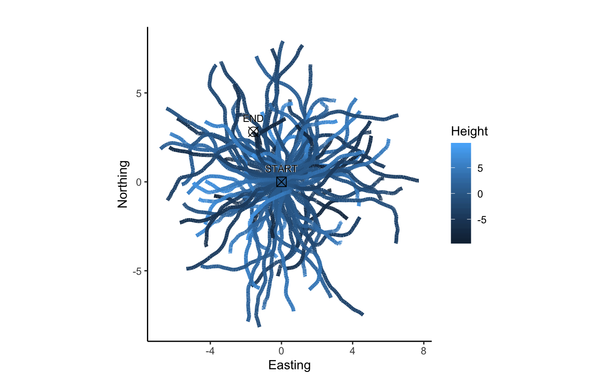
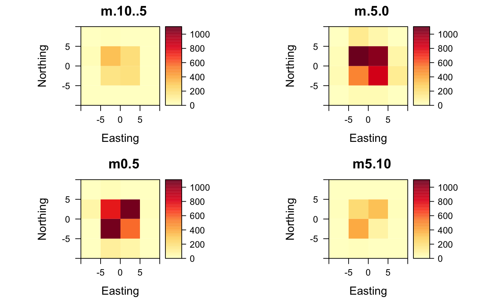
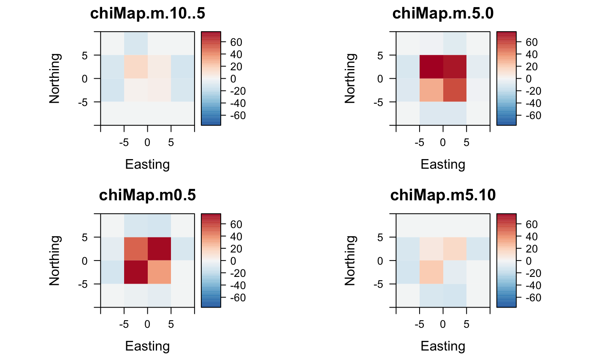

First some example trajectories are created in form of Correlated Random Walks (CRWs):
crws <- lapply(X=seq(1:100), FUN = function(X) {
sim.crw.3d(nStep = 100, rTurn = 0.99, rLift = 0.99, meanStep = 0.1)
})
plot2d(crws)
Count points per voxel and plot counts as raster stack:
points <- do.call("rbind", crws)
extent <- extent(c(-10, 10, -10, 10))
ud <- voxelCount(points, extent, xyRes=5, zMin=-10, zMax=10)
#>
|Counting points in Voxels for height: -10m - -5m ...
|Counting points in Voxels for height: -5m - 0m ...
|Counting points in Voxels for height: 0m - 5m ...
|Counting points in Voxels for height: 5m - 10m ...
|Done.
plotRaster(ud)
By calculating Chi maps, the over- and underrepresentation of points in the voxel space can be interpreted statistically:
chi <- chiMaps(ud)
#>
|Calcuate chi map for raster: 1 ...
|Calcuate chi map for raster: 2 ...
|Calcuate chi map for raster: 3 ...
|Calcuate chi map for raster: 4 ...
|Done.
plotRaster(chi, centerColorBar=TRUE)